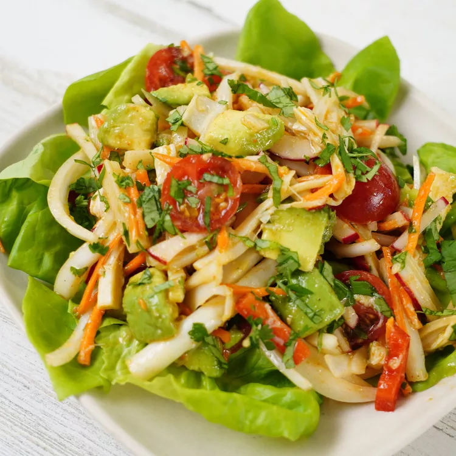

Hearts of Palm and Avocado Salad

This salad with hearts of palm and avocado is delicious served over lettuce, inside lettuce cups, or alongside tortilla chips as a dip.
Ingredients:
- 2 (14 ounce) cans whole hearts of palm, drained
- 1 lime, juiced
- 1 ½ teaspoons red wine vinegar
- ¼ cup extra-virgin olive oil
- ½ teaspoon chili powder
- ¾ teaspoon kosher salt
- ½ cup thinly sliced sweet onion
- ½ cup chopped red bell pepper
- ½ cup matchstick-cut radishes
- ⅓ cup matchstick-cut carrots
- ¼ cup chopped tomato
- 1 serrano chile pepper, seeded and minced
- ¼ cup chopped fresh cilantro
- 1 avocado, diced
Steps:
- Peel the hearts of palm into strips lengthwise and cut the pile of strips in half. Set aside.
- Combine lime juice and vinegar in a small bowl and whisk in olive oil to combine. Season with chili powder and salt and set aside.
- Combine onion, bell pepper, radish, carrots, tomato, serrano, cilantro, and reserved vinaigrette in a medium bowl; stir to combine. Gently fold in avocado and hearts of palm. Serve immediately.